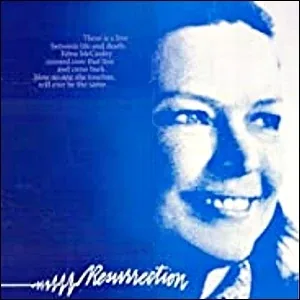
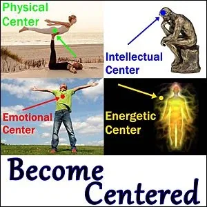
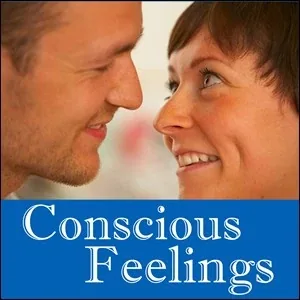
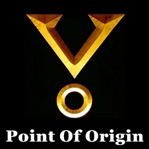

- Worthing Healers- You have allies willing to assist you with your healing.
- "On Communicating With Other Worlds"- This is a quote from John Fowles’ book - The Magus.- Early in the story, the main character cannot sleep. He reads an antique pamphlet that he finds on a dusty bookshelf near his bed. - It says: - ON COMMUNICATION WITH OTHER WORLDS- To arrive at even the nearest stars, man would have to travel for millions of years at the speed of light. Even if we had the means to travel at the speed of light we could not go to, and return from, any other inhabited area of the universe in any one lifetime; nor can we communicate by other scientific means, such as some gigantic heliograph or by radio waves. We are forever isolated, or so it appears, in our little bubble of time.- How futile all our excitement over aeroplanes! How stupid this fictional literature by writers like Verne and Wells about the peculiar beings who have evolved in the same way and with the same aspirations as ourselves. Are we then condemned never to communicate with them?- Only one method of communication is not dependent on time. Some deny that it exists. Bur there are many cases reliably guaranteed by reputable and scientific witnesses, of thoughts being communicated at precisely the moment they were conceived. Among certain primitive cultures, such as the Lapp, this phenomenon is so frequent, so accepted, that it is used as a matter of everyday convenience, as we in France use the telegraph or telephone.
Not all powers have to be discovered; some have to be regained.- This is the only means we shall ever have of communicating with mankind in other worlds. Sic itur ad astra.- This potential simultaneity of awareness in conscious beings operates as the pantograph does. As the hand draws, the copy is made.- The writer of this pamphlet is not a spiritualist and is not interested in spiritualism. He has for some years been investigating telepathic and other phenomena on the fringe of normal medical science. His interests are purely scientific. He repeats that he does not believe in the ‘supernatural’; in rosicrucianism, hermeticism, or other such aberrations.- He maintains that already more advanced worlds than our own are trying to communicate with us, and that a whole category of noble and beneficial mental behavior, which appears in our societies as good conscience, humane deeds, artistic inspiration, scientific genius, is really dictated by half-understood telepathic messages from other worlds. He believes that the Muses are not poetic fiction, but a classical insight into scientific reality we moderns should do well to investigate.
- What Is A Worthing Healer? - A 'Worthing Healer' is someone who helps others heal from a distance. - Human beings are profoundly connected Being-to-Being. - You have probably had the experience yourself of thinking about messaging someone and then a message from that exact person suddenly arrives. Or you were about to call someone, your phone rings, and it is that person you were about to call, calling you. - Or perhaps you are sitting at a café or restaurant and your head turns seemingly by itself to see someone quickly look away from you. They had been staring at you and something in you noticed it. - Or the opposite: you absent-mindedly stare at someone else in a public place and suddenly they look directly into your eyes. They caught you connecting with them. - This ' - sense of being stared at' has been researched and documented by Rupert Sheldrake, among others, including you yourself, if you will admit it.- If you study the - 3 Phase Healingwebsite you will find a small listing of healers who heal from a distance, professionally. There are many, many more. A healer who does not heal, does not stay in business very long. (If you recommend a distance healer from personal experience, please tell us so we can add them to our list.)- Being-to-Being connection works through glass. It works through a reflection in a mirror. It works through walls and physical matter. It is also a common behavior in animals, as in - dogs that know when their owners are coming home, even if the master arrives at unexpected times.- Being-to-Being connection works instantly, without time delay, which means faster than the speed of light. - It also works over immense distances, for example, from one side of Earth to the other. We have checked this personally. Why should Being-to-Being connection not work over interstellar distances? - A Worthing Healer is a distance healer from another part of the galaxy willing to help you heal. - Okay, okay... weird is weird. And still, think about it... It is probable that Earth is not the only planet in the Milky Way Galaxy that has evolved self-reflecting consciousness. Recent calculations based on 2019 data from the Keplar Telescope estimate that - between 5 billion and 10 billion Earth-like planets exist in our Milky Way Galaxy.- But as Enrico Fermi asked his colleagues during lunch in the summer of 1950, if so many planets exist as incubators of life, - "Where is everybody?"The apparent disparity between the abundance of life-generating planets and the lack of visitors from these planets has come be referred to as- The Fermi Paradox, which has been deepened by the- Drake Equationas derived by Frank Drake in 1961. If these questions bother you at all, it is worth reading through the linked articles. These considerations are extremely realistic.- Regardless of the many well-thought reasons explaining why Beings with advanced consciousness are not among us, the net result is that you cannot go to the corner alien healer office and have a treatment yourself personally. You do not need to ask permission. You do not even need to set an appointment, or have the proper insurance papers... - You do not even have to go so far as the corner office. A treatment is available for you right now wherever you are. Love is happening. What if you join in?
- Origin of the 'Worthing Healers' Name - Using the name 'Worthing' to mean: 'skilled telepathic healers delivering healing treatments from a large distance' came from a series of stories written by Orson Scott Card and compiled in his book - The Worthing Saga- StartOver.xyzgame).- A facet of - The Worthing Sagaincludes the paradoxical struggle of a planet full of distance healers. For centuries they had been reaching throughout their galaxy to heal others without the others knowing they were being healed.- On those planets where this 'automatic healing' occurred in the very moment that a wound, illness, or emotional outburst happened, the inhabitants assumed this was normal reality. But the healers eventually recognized that the healed inhabitants were cut off from the feedback that their wound, illness, or reactivity would have given them. The evolution of their consciousness was being inhibited. - Once the 'Worthing Healers' realized the consequence of their distance-healing actions, they had to stop doing what they most loved to do. Orson Scott Card's story is about how the healers eventually came to break their own vow. One of the first healers was Jason Worthing. - If you research, you will find that almost every indigenous culture, Australian Aboriginal, Native American, Mayan, even Celtic, maintained nearly ongoing communications and intimate interactions with the Worthing Healers. - In modern times, Worthing Healers have not gone away. Personally, every time I (Clinton Callahan) contact them, they ask me why they have not heard from us Earthlings lately. Every answer I give them is unsatisfying. - The core message is that a richly abundant resource for human beings is available for free, a healing resource which humans rather desperately need at the moment, and yet, we are ignoring it. - It is clear that modern culture forbids the - initiatoryprocesses that build in a person the skills and distinctions required to access these resources. What modern culture does has no bearing upon and does not interfere with you gaining the distinctions and practical skills yourself.- Welcome to the Worthing Healers website, full of experiments for integrating the distinctions and developing the appropriate inner and outer skills for connecting with the healing and transformational services of the Worthing Healers.
- Warnings - If you watch the film - Dr. Strange- deliver the warnings about doing something- BEFORE- There are several important warnings about the practices of connecting with Worthing Healers, and indeed, about working with energies and beings in general. - WARNING 1: TAKE RESPONSIBILITYIt is a precious condition to be a Being in a body. The opportunity of a Being getting to have physical and emotional sensations and to make creations that provide immediate practical-reality feedback in the physical world is rare and valuable. In short, if you don't fully inhabit your body, something else will. This is why in- Possibility Managementwe begin with learning- First Position: which includes getting good at- Centering,- Grounding, and- Bubbling (archived — not captured)yourself. You can only- Be Presentin First Position through- Self Observationto check that you have your- Attention, your- Will, your- Purpose, your- Bright Principles, and your- Tools, all at the ready in a- Minimized NOW. Having symptoms does not make you a Victim. The symptoms are not your Persecutor. Worthing Healers are not your Rescuers. Instead, Worthing Healers are in ecstatic- High Dramadelivering the services of their- Archetypal Lineage. Life is full of amazing- Possibilities. Each Possibility is a- Doorwayto a new future for you. The secret to going through a- NonlinearPossibility Doorway is taking- Radical Responsibilityfor- being at the Doorway. This warning is the serious suggestion that the most effective way to proceed is to first step into Radical Responsibility.- WARNING 2: PREPARE YOURSELFIn Possibility Management we have distinguished that each human being has so many psycho-emotional- identities, so many- parts, so many- Stories, so much- Reactivity, so many mixed- Purposes. Bringing all these into awareness and therefore gaining conscious Choice about them is a large part of the- initiatory- journeyto becoming- Adult. A good grip on adulthood shows up as being Centered, Grounded, Bubbled, and in the- Adult Ego State.- BEFORE YOU TRY MAKING CONTACT WITHthe Worthing Healers it may be best to- Build Matrixfor adulthood through doing many authentic adulthood- initiatoryand healing processes. If you cannot- Hold Spaceand- Navigate the Spacesof the- 3 Worlds, if you cannot consciously- hold your Attentionand- split your Attentionfor half-an-hour or more, the Worthing Healers may have to laugh (or cry) at your unpreparedness, and will likely send you back to grow up more before talking with them. Worthing Healers cannot do the healing- foryou. They can only help guide you through your transformational healing processes.- WARNING 3: MAKE THE TIMEThe greatest failure in the application of 'alternative' healing methodologies is not doing the healing often enough and for a long enough period of time. Worthing Healers will in general not remove the disease from you. What they- willdo is guide and accompany you on the transformational journey of- removing. Modern culture's medicine promotes the idea that taking a pill or having a surgery will suddenly cure what ails you. But where did the disease come from in the first place? You. You are the source of it. So how do you stop sourcing your ailments? You change. In the change process, the 'you' that originates the ailment dies. It falls away through becoming more aware of what causes what, just like you might stop the action of hitting your thumb with a hammer when you realize that it is this hammering action that causes you so much pain in your thumb.- youfrom the disease- WARNING 4: KEEP YOUR CENTERWhen you first make contact with a Worthing Healer, we strongly suggest that you stay focused on your own healing process. It is so easy for human beings to make assumptions, leap to conclusions, jump into their own self-invented fantasy worlds and then act as if their fantasy worlds are true. The work of Worthing Healers is not positive thinking, aphorisms, fantasy, or imagination. It does not involve believing in or not believing in anything. Worthing Healers do direct energetic healing. Your connection with the Worthing Healers and the healing sessions themselves are personally experienced. The suggestion from us is to start your session, end your session, do any practices they give you, and otherwise do not think much at all about this weird stuff afterwords. There is no place for these perspectives to fit into ordinary human life. The Universe is mysterious. Before, during, and after your sessions keep your Energetic Center on your Physical Center and stay Centered. Do not give your Authority away even to what you might assume are 'advanced Beings'. Keep a healthy dose of cynicism about all this. Make no agreements with Worthing Healers, because true Worthing Healers want nothing in return from you. This is not an exchange. It becomes quickly confusing if you ask Worthing Healers about their society, their way of life, their skills, their training program, their diet, etc. For the most part, these details do not provide help because environmental conditions are so different. For more about the futility of trying to understand anything useful about your own life using insights from other forms of intelligent life, read the book- Starmaker
- How To Connect With A Worthing Healer - Connecting with a Worthing Healer may work most effectively in the middle of the night, when most of the other people you are connected with in your daily life are likely to be sleeping. This is the time when it is most likely that the interference noise level is down. Your friends are off dreaming. They are not sending you so many conscious or unconscious messages full of stories, projections, needs, requests, emotions, expectati0ns, and so on. - Connecting with a Worthing Healer may be most appropriate when you find yourself awake in the middle of the night naturally, that is, to get up to go pee, getting tangled in your blankets, waking up from a nightmare or some physical discomfort, hearing a noise, a thunderstorm, for example. If you tend to sleep solidly through the night you may need to set some kind of alarm for yourself to wake up at three or four in the morning. - Here are simplified instructions for 'dialing up' and establishing your personal connection with the Worthing Healers: - Best is to lie down in a comfortable position. You can also do this sitting or standing, but for your first session, where you open your personal Worthing Account, it is best to lie down. In particular, don't do this while driving.
- Choose a small point across the room from you and focus your eyes there, even in the dark.
- Count 1, 2, 3, 4, 5, 6, 7, and on 7 take a deep breath and close your eyes. You will already be in a meditation state (alpha state).
- Send out a call to the Worthing Healers Operator out there in the general direction of the center of this Galaxy. This is like dialing their phone number. Wait patiently until they answer.
- Wait until they answer. When they say, "Hello,"then you say, "Hello. My name is _. I am ___-years-old female/male located in a country called ________ on Planet Earth, the third planet out from the star Sol.__My body seems invaded with a virus (or tell them where your pain is or what it feels like, or any symptoms you have). Could you please check me out and heal me?"
- Your request is a proposal for an agreement. The Worthing Healers are not rescuers. It is unlawful for them to heal you from a distance until you call them up and ask them to heal you.
- If your offer is earnest, your call will be re-directed and the Worthing Healers currently active will immediately welcome you and begin.
- You may not feel anything particular. Or your pain might suddenly get worse. Or you might feel a warm, connecting vibration in your heart or Being. The suggestion is to notice any sensations you experience, but not expect them. Do not go looking for sensations.The sensations are not the point. You looking for sensations actually blocks your body from receiving the healing. If by chance some amazing sensations actually do occur, then AFTER YOUR SESSION, get out yourBeep! Book
- Stay in the 'receptive, being healed' state for around 10-20 minutes. Do not worry about your fear about if it is working or not. Instead maintain a state of gratitude for being alive, and gratitude for the Being-To-Being connection from the Worthing Healers. It is perfectly fine if you fall asleep.
- Your first 'call-in' establishes your open account with the Worthing Healers. They are not rescuers. They will not treat you if you do not precisely and clearly (in the Adult Ego State, not as a 'poor victim' to be rescued...) ask them for treatment. This is IMPORTANT. It also means you cannot ask the Worthing Healers to treat someone else. They won't do it. The agreement with the Worthing Healers is initiated by your own Conscious Will, or it is not initiated at all.
- In the following days, day or night, whenever you notice feeling pain, discomfort, or something 'bad', send a pulse out along your connection with the Worthing Healers requesting further attention. They depend on you to be responsible for doing this. They are not 'watching over you'. You are responsible for your own healing. Then spend a few more minutes in the 'being healed' state. Then resume your day.
- Healing from Worthing Healers (and most 'alternative' healing modalities) is not sudden because it is deeper and more thorough. It intends to create energetic system change deep inside of you, as is customary in 3 Phase Healing.The strategy is to remove you from the illness rather than trying to remove the illness from you. Going through multiple and possibly intenseLiquid StatesandEmotional Healing Processeswill be part of your healingPath. Plan to keep your Worthing Healer Connection open and active for at least a couple of weeks, up to six months or a year, regardless of your ailment.
- Have Funin your connection with such amazing Beings.
Healing Preparation Experiments

- Watch the 1980 film:- Resurrectionwith Ellyn Burstyn- Matrix Code WORTHING.01- It can help to connect with healers - even at a distance - if you are already somehow connected to the life of a healer, what it is to be a healer. - Resurrectionis the story of a woman going through her initiation into becoming an energetic healer. Scene after scene the whole story unfolds rather realistically, almost like a documentary. This is an intimate portrait, and the way she resolves the conflict between her natural talents and the redneck American environment is heart-healing and realistic.

- Prepare Yourself: Become Centered- Matrix Code WORTHING.02- You have - 5 Bodies- You are a - Being- Your Being wears each of your 5 Bodies like a body-glove. - Each of your 5 Bodies has a Center that is located at the center of that body. - Your Being has a center that is mobile. - By placing your Being Center on your Physical Center you have an experience that is called 'Being Centered'. - When you are Centered, you can be - Present- Will- Purpose- Integrity- Voice- Feelings- Minimized NOW- As outlined in the WARNINGS section above, these are core preparations for an encounter with a Worthing Healer. - During this week, interview 3 different people and ask them to give you feedback about all the ways they perceive or experience you to be adaptive, that is, to give your center away. Read each person these questions: - "Who do I give my center to? To whom? Why do I give my center away? What is my benefit? Exactly how do I play small? When do I hold myself back from speaking? When do I block my creative participation? What does giving my center away cost me? Who would I be if I did not give my center away?"Ask each of the 3 people to answer all of these questions while you write down exactly what they say.- At your online or offline - Possibility Team- Rage Club- Becoming Centered is worth working hard at. It will affect the rest of your life.

- Prepare Yourself: Learn To Inner Navigate Your Feelings And Emotions- Matrix Code WORTHING.03- A friend of mine is a doctor in South France who dedicated himself to making health care and doctor visits possible for the local nomadic tribes of Gypsies. At first they would come into his office and when he was not looking they would steal the chairs in his waiting room. He said nothing and either left them with no chairs or found throw-away chairs to replace them. Finally the Gypsy women started coming to him. Their biggest complaint was stomach cramps, upset intestines, and abdominal pains. When they realized they could talk with him it came out from woman after woman that they were terrified. He finally got them to say what they were so afraid about. They said, "I am so afraid of farting in bed. My husband says that if I fart in bed he will throw me away." He did not laugh. The tensions of holding in fear (and sadness and rage, and even pure joy) is the original cause of so many illnesses. - This - Experimentis to consciously experience and express anger, sadness, fear, and joy, from 0% intense (numbness) up to at least 35% intense. We don't care how you learn it. There are- websites- books - Prepare Yourself: Reclaim Your Authority To Heal- Matrix Code WORTHING.04- Modern culture wants you to believe that certain certified individuals have the 'authority' to provide you with professional services, such as tax accountants, PhDs, car mechanics, bankers, lawyers, psychiatrists, and doctors. If you buy this marketing strategy, then either you will pay a lot to obtain one of those degrees, certificates, or licenses, or, you will pay a lot to someone who has one of these degrees, certificates, or licenses posted on their wall assuming that the system will provide you with the fantasy concept of security. - Please read through and do Experiments from the - http://authority.mystrikingly.com- By now you have discovered that reclaiming Authority is a transformational - Process- journeys- Liquid State- Being able to take new Authority depends on you - building new Matrix- This - Experimentis to take back your Authority to heal.- Please get out your - Beep! Book- Building the matrix to take back your Authority for your own healing starts by becoming excruciatingly aware of all the times, over all these years, that you have given away your Authority for your own health and healing in all those different ways to external authority figures. Be specific, dates, names, actions... write them into your - Beep! Bookunder the heading- I HAVE GIVEN MY HEALING AUTHORITY TO:Be- Radically Honest

- Prepare Yourself: Loosen Your Point Of Origin- Matrix Code WORTHING.05
A Personal Story Of Being Healed By 'Worthing Healers' - From minute 29:00 until 32:00. - More details from Cancer Survival Adventure #7- From minute 05:30 until 08:13.